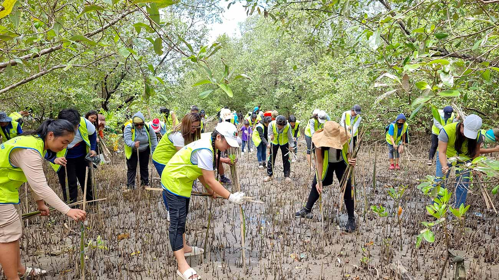

About Us & Community
Discover our mission to green urban spaces and see how our community is making a lasting impact.
Project Overview
Understanding the challenges of urban greening and how we are addressing them to build a sustainable future.
Who is affected by this problem?
Residents in hot, dry urban areas are the most affected, especially individuals and local volunteers eager to plant trees but lacking proper guidance. Without reliable information, local governments and environmental groups struggle to promote urban greening, ultimately leaving future generations to face worsening climate conditions and a lack of green spaces.
Why is this important?
Many people want to help the environment, but without clear guidance, they may choose the wrong plants or care for them incorrectly, leading to failed efforts. This impacts entire communities, making cities hotter, less sustainable, and highly vulnerable to climate change.
How does this website help?
We serve as a centralized platform providing clear, reliable guidance tailored for hot and dry climates. By offering step-by-step instructions, plant selection tools, visual tutorials, and interactive community features, we empower users to succeed in their sustainable urban development efforts.
What SDGs do we support?
- SDG 11 (Sustainable Cities): Promoting greener spaces to enhance public health and livability.
- SDG 13 (Climate Action): Reducing CO2 levels and mitigating urban heat through tree planting.
- SDG 15 (Life on Land): Supporting biodiversity by restoring urban ecosystems with native plants.

50K+
Trees Planted
120
Communities
3
SDGs Supported
Greening Ideas
Simple ideas and environmental inspiration for community and home planting.
Balcony Gardens
Maximize your apartment space by creating vertical plant walls and container gardens on your balcony.
Street Greening
Partner with neighbors to plant native shrubs along sidewalks to cool down asphalt temperatures.
Eco-Inspiration
Discover creative upcycling ideas, such as turning old pallets into raised garden beds.
Community Section
Share experiences, read success stories, and engage in local community participation.